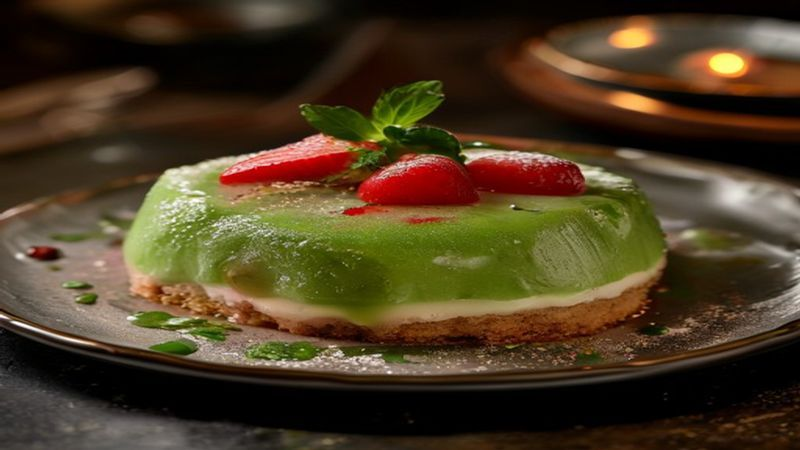

Matcha Strawberry Cloud Tart
A vibrant pink and emerald dessert that looks like a cloud in a cupcake! Perfect for summer Instagram moments, this tart blends sweet strawberries with earthy matcha for a flavor explosion.
Ingredients
- 2 cups fresh strawberries, hulled and sliced
- 1/2 cup mascarpone cheese
- 1/4 cup powdered sugar
- 1 tbsp matcha powder
- 1/4 cup all-purpose flour
- 1/4 cup unsalted butter, melted
- 1 large egg
- 1 tsp vanilla extract
Instructions
1
Preheat oven to 350°F (175°C). Mix flour, butter, and egg until crumbly; press into tart shell and bake 10 minutes.
2
In a bowl, whip mascarpone with sugar, matcha, and vanilla until light and fluffy. Fold in strawberries.
3
Pour filling into warm tart shell, smooth top, and refrigerate 1 hour before serving.
4
Garnish with fresh strawberries and a dusting of matcha powder for Instagram-worthy flair.